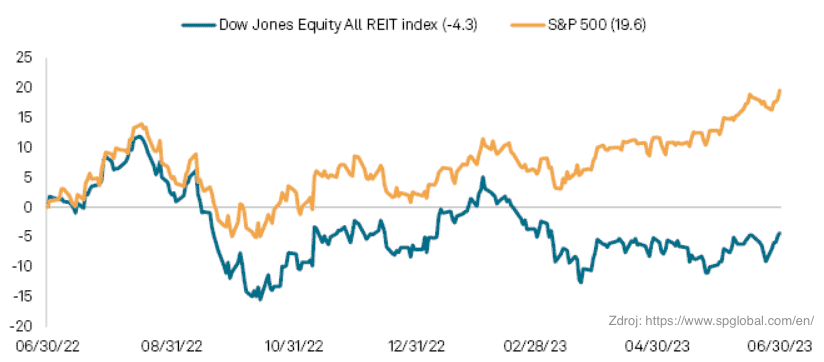

REITY ANEB NEMOVITOSTNÍ FONDY V AKCIOVÉM KABÁTU
REIT, neboli Real Estate Investment Trust, je akciová společnost, která investuje do nemovitostí. REIT musí splňovat určitá kritéria, aby mohla být klasifikována jako REIT, včetně:
-
Musí být kótována na burze.
-
Musí investovat alespoň 75 % svých aktiv do nemovitostí nebo souvisejících aktiv.
-
Musí každoročně vyplácet alespoň 90 % svých čistých příjmů jako dividendy svým akcionářům.
REIT jsou dostupné pro širokou veřejnost a nabízejí investorům možnost investovat do nemovitostí bez nutnosti vlastnit fyzické nemovitosti. Zdá se tedy, že jde o opravdu jednoduchou investici téměř bez rizika. Podívejme se však i na nevýhody:
-
Jednotlivé fondy mohou být ve výsledku podstatně dražší než jednotlivé nemovitosti.
-
Fond podléhá dani stejně jako jiné akcie.
-
Je to akciový fond, a je tedy stejně jako akcie volatilní.
Problém nastane, když začnou růst úrokové sazby. Poptávka po nemovitostech ochladne a developeři se tak dostávají do problému ze dvou směrů. Jednak jsou sami dlužníci a musí si půjčovat za vysoký úrok a jednak musí jít s cenami dolů. Co z toho každopádně plyne? Realitní trh umí být též velmi rizikový, když se změní makroekonomické prostředí. Když jsou levné úvěry a nízká inflace, reality rostou jako z vody (alespoň to se dozvíme při analýze ziskovosti a vzniku nových REIT od roku 2000, největší změny můžeme vidět od roku 2008 až po 2017, následně zlom k roku 2019). Jakmile se ovšem vzedme inflace, nastane problém. Jelikož rostoucí inflace vede k růstu v úrokových sazbách.
Nejlepšími odvětvími v oblasti nemovitostí ve druhém čtvrtletí byly bytový sektor a sektor zdravotní péče. V přiloženém grafu za rok 2023 můžeme vidět, že REIT ztrácí za trhem (S&P500) a dokud se nezačnou úrokové sazby centrálních bank snižovat, rapidní zlepšení neuvidíme.
% návratnost All REIT indexu ve srovnání s S&P500
Trh s REIT na první pohled vypadá, že má to nejhorší za sebou. Jelikož jsme se dostaly na možný vrchol současného cyklu růstu úrokových sazeb. To neznamená, že realitní trh nemůže níže. Jestli k hospodářskému útlumu dojde, dojde i k útlumu realitního trhu. Proto je třeba být opatrný a zvážit všechna možná rizika. Přes to všechno jsme zastánci REITů v portfoliu. Jsme přesvědčeni, že vzhledem k cílům (které jsou většinou dlouhodobé, tzn na čerpání renty apod) jsou vhodné. Zároveň tam alokujeme jen část portfolia (max 10%) a nesou pěknou dividendu. Portfolia diverzifikujeme a dlouhodobě sledujeme situaci. Pokud se něco změní, dáme vám to vědět.